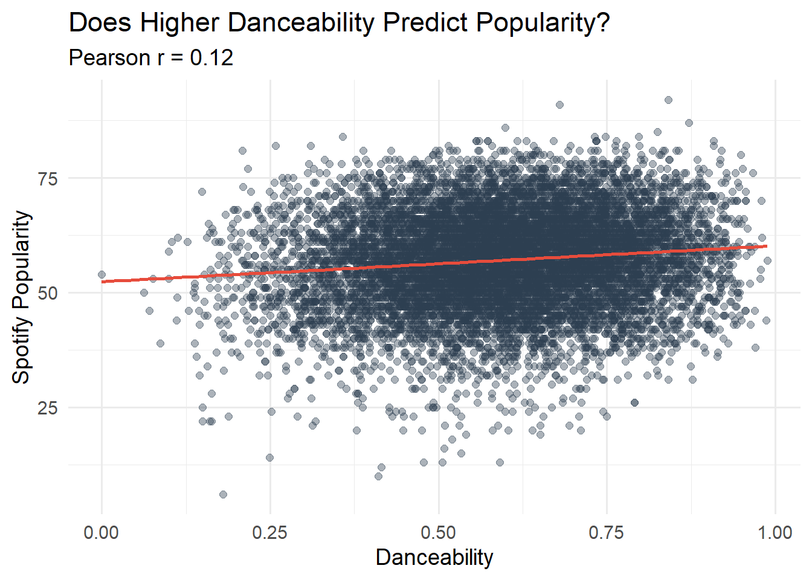

In this project, we harness data to answer a simple but compelling question: what makes a song not just good, but universally loved? By tapping into two distinct data exports, one detailing track popularity metrics and another cataloguing song attributes (tempo, key, danceability, and energy) we can move beyond subjective taste and build an evidence‑backed “Ultimate Playlist.”
Back in high school and honestly, ever since, my playlists were ruled by ASAP Mob and especially ASAP Rocky. Even though the crew isn’t cranking out tracks like they used to, I’m ready to breathe new life into my listening lineup. This time, I’m letting the data steer the vibes and build the truly ultimate playlist. Armed with analytics, I’ll uncover hidden gems and forgotten bangers that’ll keep every session feeling fresh and fire.
This project is also insipired by the “All Rise” playlist, by Mr Barney Stinson, as the Ultimate Playtlist helps define a great aggregation of music into a single playlist based on what we love to hear most.
Below, we are pulling in the two datasets for this project straight from GitHub, preparing us for the analysis that follows.
Data
Show the code
load_songs <-function() {library(readr) dir_path <-"data/mp03" file_name <-"songs.csv" file_path <-file.path(dir_path, file_name)#checking dupolicate so that github will not block itif (!dir.exists(dir_path)) {dir.create(dir_path, recursive =TRUE) }# downloadif (!file.exists(file_path)) {download.file("https://raw.githubusercontent.com/gabminamedez/spotify-data/refs/heads/master/data.csv",destfile = file_path,mode ="wb" ) }# reading in dataset file_path |>read_csv(show_col_types =FALSE)}songs_df <-load_songs()
Thanks to the github user, gabminamedez, we have a master file of a catalogue of songs that contains their respective propertiers such as name, release_date, dancebility, energy and much more that will be integral for our analysis.
Show the code
#After donwloading the entire dataset, I could not render it on my PC. We are only slicing the first 1000 files.#Credit: GPT for the for looplibrary(jsonlite)load_playlists <-function(n =10) { base_url <-"https://raw.githubusercontent.com/DevinOgrady/spotify_million_playlist_dataset/main/data1/" dir_path <-"data/mp03/playlists"# Create folder if (!dir.exists(dir_path)) {dir.create(dir_path, recursive =TRUE) }# Here we are beginning the sequence at 0 and stopping at 1000. Per professor's instructions. slice_starts <-seq(from =0, by =1000, length.out = n) playlists <-list()for (start in slice_starts) { end <- start +999 file_name <-sprintf("mpd.slice.%d-%d.json", start, end) file_url <-paste0(base_url, file_name) file_path <-file.path(dir_path, file_name)if (!file.exists(file_path)) {message("Downloading ", file_name)tryCatch(download.file(file_url, file_path, mode ="wb", quiet =TRUE),error =function(e) message(" ✗ Download failed for ", file_name) )if (!file.exists(file_path)) next }# Parse JSON safely data <-tryCatch(fromJSON(file_path),error =function(e) {message(" ✗ Failed to parse ", file_name)NULL } )if (!is.null(data)) { playlists[[length(playlists) +1]] <- data$playlists } } playlists}playlists <-load_playlists(n =10)
Show the code
library(dplyr)library(tidyr)library(stringr)strip_spotify_prefix <-function(x) {str_extract(x, ".*:.*:(.*)", group =1)}playlist_df <- playlists[[1]] |>mutate(playlist_name = name,playlist_id =strip_spotify_prefix(pid),playlist_followers = num_followers ) |>select(playlist_name, playlist_id, playlist_followers, tracks) |>unnest(tracks) |># These are more of the columns that were specifid we needed for this projectmutate(playlist_position =row_number(), artist_name = artist_name, artist_id =strip_spotify_prefix(artist_uri),track_name = track_name,track_id =strip_spotify_prefix(track_uri),album_name = album_name,album_id =strip_spotify_prefix(album_uri),duration = duration_ms ) |>select( playlist_name, playlist_id, playlist_position, playlist_followers, artist_name, artist_id, track_name, track_id, album_name, album_id, duration )
Initial Data Exploration
How many distinct tracks and artists are represented in the playlist data?
Show the code
library(dplyr)library(knitr)playlist_df |>summarise(`Distinct Tracks`=n_distinct(track_id),`Distinct Artists`=n_distinct(artist_id) ) |>kable(caption ="Unique Number of Artisits & Tracks",align ="c" )
Unique Number of Artisits & Tracks
Distinct Tracks
Distinct Artists
34443
9754
The playlist dataset contains 34,443 distinct tracks and 9,754 distinct artists. Quite a large range!
What are the 5 most popular tracks in the playlist data?
Show the code
playlist_df |>count( track_name, artist_name, album_name,name ="Appearances" ) |>arrange(desc(Appearances)) |>head() |>rename(`Track Name`= track_name,`Artist Name`= artist_name,`Album Name`= album_name,`Number of Playlist Appearances`= Appearances ) |>kable(caption ="Most Popular Tracks in Playlist Dataset",align ="c" )
Most Popular Tracks in Playlist Dataset
Track Name
Artist Name
Album Name
Number of Playlist Appearances
One Dance
Drake
Views
55
HUMBLE.
Kendrick Lamar
DAMN.
52
Broccoli (feat. Lil Yachty)
DRAM
Big Baby DRAM
50
Closer
The Chainsmokers
Closer
46
Congratulations
Post Malone
Stoney
44
Don’t Let Me Down
The Chainsmokers
The Chainsmokers- Japan Special Edition
42
In the table above, we display the top songs in the playlist dataset. “One Dance” by Drake, takes top spot as it appears in 55 different playlists.
What is the most popular track in the playlist data that does not have a corresponding entry in the song characteristics data?
Show the code
playlist_df |>anti_join(songs_df, by =c("track_id"="id")) |>count( track_name, artist_name, album_name,name ="Appearances" ) |>arrange(desc(Appearances)) |>slice_head(n =1) |>rename( `Track Name`= track_name,`Artist Name`= artist_name,`Album Name`= album_name,`Number of Playlist Appearances`= Appearances ) |>kable(caption ="The Most Popular Track that is not in both Datasets",align ="c" )
The Most Popular Track that is not in both Datasets
Track Name
Artist Name
Album Name
Number of Playlist Appearances
One Dance
Drake
Views
55
The song “One Dance” by Drake does not appear in the songs characteristics data.
According to the song characteristics data, what is the most “danceable” track? How often does it appear in a playlist?
The playlist that has the longest average duration is 411 seconds (mean). The playlist is called “Classical” and is by “Pyotr Ilyich Tchaikovsky”
What is the most popular playlist on Spotify?
Show the code
playlist_df |>slice_max(playlist_followers, n =1, with_ties =FALSE) |># with_ties helps keep out duplicates from appearingmutate(`Duration (sec)`= duration /1000) |># ms → secselect( playlist_name, playlist_position, playlist_followers, artist_name, album_name,`Duration (sec)` ) |>rename(`Playlist Name`= playlist_name,`Playlist Position`= playlist_position,`Playlist Followers`= playlist_followers,`Artist Name`= artist_name,`Album Name`= album_name ) |>kable(caption ="Most popular playlist on Spotify",align ="c" )
Most popular playlist on Spotify
Playlist Name
Playlist Position
Playlist Followers
Artist Name
Album Name
Duration (sec)
Tangled
51259
1038
Mandy Moore
Tangled
152.333
The most popular playlist on Spotify is “Tangled”, with 1,038 followers.
Visually Identifying Characteristics of Popular Songs
Inner joining both the song characteristics & playlist datasets. Dataframe will be called inner_joined_data.
Show the code
inner_joined_data <- songs_df |>rename(track_id = id) |>inner_join(playlist_df, by ="track_id")
Is the popularity column correlated with the number of playlist appearances? If so, to what degree?
Show the code
library(ggplot2)track_stats <- inner_joined_data |>count(track_id, popularity, name ="play_count")#Pearson correlation between play count and popularitycorr_coef <-cor(track_stats$play_count, track_stats$popularity)#Scatterplottrack_stats |>ggplot(aes(x = play_count, y = popularity)) +geom_point(alpha =0.4, size =2, color ="#2C3E50") +geom_smooth(method ="lm", color ="#E74C3C", se =FALSE) +scale_x_log10() +labs(title ="Spotify Popularity vs. # of Playlist Appearances",subtitle =paste0("Pearson r = ", round(corr_coef, 2)),x ="Playlist Appearances",y ="Spotify Popularity " ) +theme_minimal(base_size =14)
Show the code
pop_cutoff <-70
We conducted a Pearson correlation analysis to examine whether a song’s popularity score is related to its playlist position. The resulting correlation coefficient of 0.49 indicates a moderate positive relationship: in general, more‑popular songs tend to appear earlier in playlists. However, the correlation is far from perfect, so highly popular tracks can still show up infrequently—or later—on certain playlists.
In what year were the most popular songs released?
Over time, songs have generally grown in popularity. Beginning in the 1980s, however, the upward trend levels off, implying that a greater volume of popular tracks was released. This plateau likely reflects wider access to music via radio, television, physical media, and eventually the internet.
The chart plots average danceability in 25‑year release intervals. Danceability climbs steadily from the 1950s, reaching its highest point in 2020 during the 2010s, indicating that songs have become progressively more dance‑friendly over time.The value was at .673.
Which decade is most represented on user playlists?
Show the code
inner_joined_data |>mutate(decade = (year %/%10) *10) |>count(decade, name ="Number Of Playlists") |>arrange(desc(`Number Of Playlists`)) |>slice_head(n =5) |>ggplot(aes(x =factor(decade),y =`Number Of Playlists`,fill =factor(decade) # map fill to decade )) +geom_col() +#legend titlescale_fill_brewer(palette ="Set2",name ="Decade" ) +labs(title ="Top 5 Most Represented Decades in Playlists",x ="Decade",y ="Number of Playlists" ) +theme_minimal(base_size =14) +theme(legend.position ="right",axis.text.x =element_text(size =12),plot.title =element_text(face ="bold", hjust =0.5) )
The 2010s have by far been the most reresented on users playlists.
To spotlight the tonal palette of our merged dataset, we spun up a vibrant rose (polar bar) chart that fans out each musical key around a full 360° circle. Every wedge represents one key it displayshow many distinct tracks are in that key, giving you an instant feel for which tonal centers dominate our playlists. Right away you can see that C is the highest with 1,185 tracks—while neighboring keys like C♯/D♭ and D trail closely behind.
What are the most popular track lengths? (Are short tracks, long tracks, or something in between most commonly included in user playlists?)
Show the code
# Bin track lengths into categories (in minutes)length_bins <- inner_joined_data |>mutate(length_min = duration /60000,length_bin =case_when( length_min <2~"< 2 min", length_min <4~"2–4 min", length_min <6~"4–6 min", length_min <8~"6–8 min",TRUE~"8+ min" ),length_bin =factor( length_bin,levels =c("< 2 min", "2–4 min", "4–6 min", "6–8 min", "8+ min") ) )length_freq <- length_bins |>count(length_bin, name ="freq") |>arrange(desc(freq))length_freq |>ggplot(aes(x = length_bin, y = freq)) +geom_col(fill ="#1ABC9C", width =0.7) +labs(title ="Track Lengths in User Playlists",x ="Track Length",y ="Number of Appearances" ) +theme_minimal(base_size =14) +theme(axis.text.x =element_text(size =12),axis.title =element_text(size =14),plot.title =element_text(size =16, face ="bold", hjust =0.5) )
The chart compares track length (in minutes) with how often songs appear in playlists. Most tracks cluster in the 2–4‑ and 4–6‑minute ranges, suggesting that songs of these lengths tend to be the most popular. Tracks shorter than two minutes or longer than six show a sharp drop‑off, indicating that listeners are less likely to include unusually brief or extended songs in their everyday playlists.
Do higher‑energy songs tend to be more popular on Spotify?
inner_joined_data |>ggplot(aes(x = energy, y = popularity)) +geom_point(alpha =0.4, size =2) +geom_smooth(method ="lm", se =FALSE, color ="#E74C3C") +labs(title ="Spotify Popularity vs. Song Energy",subtitle =paste0("Pearson r = ", round(corr_coef, 2)),x ="Energy",y ="Spotify Popularity" ) +theme_minimal(base_size =14)
A Spearman correlation of 0.02 between a track’s energy and its popularity shows virtually no systematic connection—amping up the energy does not, on its own, catapult a song onto more playlists. The coefficient is so close to zero that random variation could overwhelm any real effect, hinting (if anything) at a faintly opposite trend. In practice, elements like melody, marketing reach, and cultural zeitgeist likely play a much larger role in determining whether a track catches fire with listeners.
Do more acoustic songs tend to be more or less popular on Spotify?
Show the code
inner_joined_data |>ggplot(aes(x = acousticness, y = popularity)) +geom_point(alpha =0.3, size =1.5, color ="#2C3E50") +geom_smooth(method ="lm", se =FALSE, color ="#E74C3C") +labs(title ="Spotify Popularity vs. Acousticness",x ="Acousticness",y ="Popularity" ) +theme_minimal(base_size =14) +theme(plot.title =element_text(face ="bold", hjust =0.5),axis.title =element_text(size =12) )
There is a noticeable negative linear relationship between a track’s popularity and its acousticness—the more acoustic a song sounds, the less likely it is to rack up high popularity scores. Both metrics are right‑skewed, meaning most songs cluster at the “high‑popularity / low‑acousticness” end of the spectrum. In other words, if you want your next release to land on more user‑generated playlists, consider trimming back the unplugged, acoustic vibe and leaning into a more produced sound.
Does the higher danceability of a song dictate its popularity?
dance_pop |>ggplot(aes(x = danceability, y = popularity)) +geom_point(alpha =0.4, size =2, color ="#2C3E50") +geom_smooth(method ="lm", color ="#E74C3C", se =FALSE) +labs(title ="Does Higher Danceability Predict Popularity?",subtitle =paste0("Pearson r = ", round(corr_coef, 2)),x ="Danceability",y ="Spotify Popularity" ) +theme_minimal(base_size =14)

We tested whether more danceable songs tend to be more popular. The Spearman correlation coefficient is 0.12, indicating a negligible relationship; danceability does not meaningfully predict popularity in this dataset. Popularity is therefore most likely influenced by other factors such as artist visibility, marketing, or lyrical appeal—rather than just how dance-friendly a track is.
Building The Ultimate Playlist
To craft the ultimate playlist, we’ve selected A$AP Rocky’s “Fashion Killa” as the anchor track—the stylistic benchmark against which every other song will be measured. In the sections that follow, we’ll perform a data‑driven analysis of tempo, key, mood, and lyrical themes to uncover the tracks that complement its sleek, laid‑back vibe. The goal is a seamlessly flowing set that not only echoes the energy of “Fashion Killa” but also keeps listeners engaged from start to finish.
But also to keep it simple, I need some new music to listen to…
Video For Fashion Killa (Clean)
Heuristic 1: What other songs commonly appear on playlists along side this song?
Top 10 Songs Closest to Fashion Killa by Euclidean Distance
Track Name
Artist Name
Popularity
Acousticness
Danceability
Energy
Liveness
Distance
Goldie
A$AP Rocky
66
0.225
0.697
0.848
0.493
0.1300654
Love Game
Eminem
55
0.359
0.766
0.941
0.585
0.1587230
El Inmigrante
Calibre 50
50
0.403
0.797
0.758
0.623
0.1662318
Guap
Big Sean
54
0.311
0.650
0.723
0.412
0.2084370
Daydreamin’
Ariana Grande
49
0.233
0.675
0.643
0.561
0.2305949
Vivir Mi Vida
Marc Anthony
75
0.344
0.655
0.877
0.349
0.2345528
The Drop
Bro Safari
52
0.105
0.689
0.880
0.447
0.2373542
Love In The Sky
The Weeknd
59
0.160
0.644
0.736
0.600
0.2386085
Freak Hoe
Speaker Knockerz
54
0.100
0.794
0.871
0.384
0.2389037
Tunnel Vision
Justin Timberlake
52
0.275
0.572
0.771
0.473
0.2395600
Euclidean distance measures the straight‐line distance between two points in multi‐dimensional space by taking the square root of the sum of squared differences across each dimension. In our code, we treated each song’s audio features (acousticness, danceability, energy, liveness) as coordinates in a four‐dimensional space and computed the distance between every candidate track and the anchor song “Fashion Killa.” This sounds pretty complicated just takeaway that using the 4 features we computed the distance between one song and another song, esentailly finding the closest ones based on the features.
Heuristic 5: What other songs co-occur with Fashion Killa in other playlists have the most daceability?
Top 10 Most Danceable Songs Co-occurring with “Fashion Killa”
Track Name
Artist Name
Danceability
Popularity
Funky Cold Medina
Tone-Loc
0.988
57
Go Girl
Young Boss
0.986
44
Ice Ice Baby
Vanilla Ice
0.980
62
Ice Ice Baby
Vanilla Ice
0.979
70
Cha Cha Slide - Original Live Platinum Band Mix
Mr. C The Slide Man
0.978
55
For Everybody
Juicy J
0.977
53
D.M.S.R.
Prince
0.970
38
4 My People (feat. Eve) - featuring Eve LP Version
Missy Elliott
0.969
46
Walked In
Bankroll Fresh
0.969
60
SexyBack
Justin Timberlake
0.967
76
This final playlist is the result of all of the analysis befoore. Taking the five heuristic’s into this final list, we will create a list that includes a mixture of popular and non-popular songs. We measured non popular songs by those that have <65 score in the dataset.
To assemble the playlist, each candidate song was scored against several data-driven metrics:
Playlist co-occurrence — frequency with which the track appears alongside our seed songs in public playlists
Tempo-Key similarity — songs that contain similar characteristics in tempo and key
Acousticness alignment — consistency in acoustic properties to keep the overall sound cohesive
Danceability overlap — shared rhythmic characteristics with the top dance-oriented tracks
Artist catalog depth — releases that best represent each featured artist (mostly their best work)
We also stratified selections by Spotify popularity to showcase both mainstream hits and hidden gems:
Popular ≥ 60 — well-known tracks with broad listener base (6 are included)
Non-popular < 60 — underrated songs that deserve more play (6 are included)
This balance keeps the playlist fresh while giving lesser-known tracks a spotlight.
Blending these heuristics produced the ultimate 12-song playlist below.
WARNING Please listen at your discretion! Some songs may contain explicit material. Unfortunately Spotify does not house clean versions for alot of these songs.